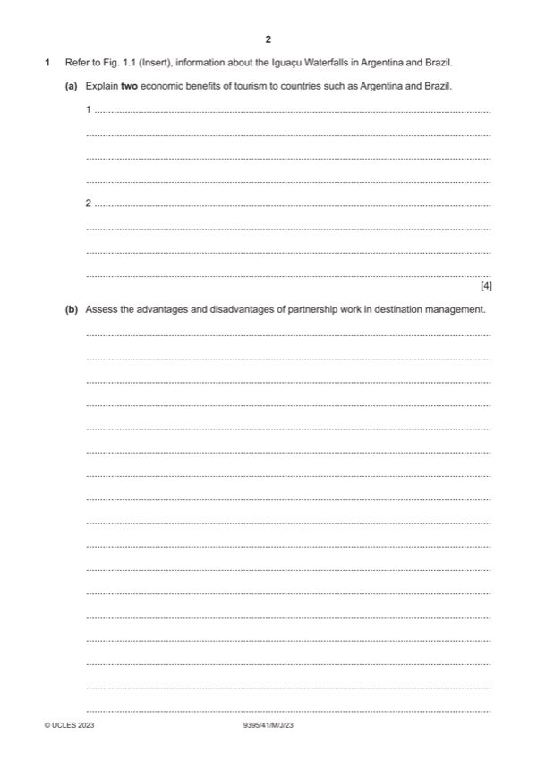

Question 1

Original paper page 2
Part 1(a) — solution
- The opportunity to provide more employment roles [1] both direct and
- Spread the wealth in the area/income generation [1] bringing benefits to
- Ability to make money through foreign exchange [1] this can then be
- Develop the multiplier effect [1] which will benefit the local community
Mark points
- The opportunity to provide more employment roles [1] both direct and
- Spread the wealth in the area/income generation [1] bringing benefits to
- Ability to make money through foreign exchange [1] this can then be
- Develop the multiplier effect [1] which will benefit the local community
Part 1(b) — solution
- Share costs, in time, money and labour
- Work on joint collaborations and share skills
- Possibility to bring in more funds
- Share and receive more support/share burden and make better
- Expand the advertising/promotion and reach of the product/service
- To raise awareness
- To become sustainable
- Disputes between ideals/ethics
- Loss of autonomy
- Lack of stability
- Complications and misunderstandings
- Possibility for conflicts
- Slower more difficult decision making
Mark points
- Share costs, in time, money and labour
- Work on joint collaborations and share skills
- Possibility to bring in more funds
- Share and receive more support/share burden and make better
- Expand the advertising/promotion and reach of the product/service
- To raise awareness
- To become sustainable
- Disputes between ideals/ethics
- Loss of autonomy
- Lack of stability
- Complications and misunderstandings
- Possibility for conflicts
- Slower more difficult decision making
Part 1(b) — solution
Level 3 (7–9 marks) can be awarded for analytical comments about the
advantages and disadvantages of partnership work. Candidates effectively
assess a range of ways and clearly attempt to weigh up their significance.
There should be sound and frequent evidence of thorough, detailed and
accurate knowledge and understanding of concepts and principles using
appropriate terminology.
Level 2 (4–6 marks) can be awarded for an explanation of a number of
possible advantages and disadvantages of partnership work. There may be
some attempt to assess and some analytical language may be used. The
answer is relevant and accurate and shows reasonable knowledge and
understanding of concepts and principles with some use of specialist
vocabulary.
Level 1 (1–3 marks) will identify/describe some possible reasons for
advantages and disadvantages of partnership work. Information may be in
the form of a list, explanations are incomplete and arguments partial (if
present). The answer lacks coherent organisation and there is little or no
attempt to assess. The answer is basic and shows limited knowledge and
understanding of concepts and principles with limited use of appropriate
terminology.
Level 0 (0 marks) No content worthy of credit.
Mark points
- Include the ideas shown in the solution above.
Part 1(c) — solution
- Building regulations and using sustainable assets to protect resources
- Using and developing the eco train
- Conservation and preservation of areas to protect and restrict
- Encouraging use of specific trails and boat tours
- Zoning, time and place particularly around the waterfalls
- Fee charging for entry to the parks
- Incorporating responsible tourism, providing signs, notice boards and
- Guided tours with local official guides only
- Dedicated planting areas
- Protection of the indigenous areas
Mark points
- Building regulations and using sustainable assets to protect resources
- Using and developing the eco train
- Conservation and preservation of areas to protect and restrict
- Encouraging use of specific trails and boat tours
- Zoning, time and place particularly around the waterfalls
- Fee charging for entry to the parks
- Incorporating responsible tourism, providing signs, notice boards and
- Guided tours with local official guides only
- Dedicated planting areas
- Protection of the indigenous areas
Part 1(c) — solution
Level 3 (9–12 marks) can be awarded for evaluating a number of strategies
for reducing environmental impacts and attempt to weigh up the significance
of each way. There is sound and frequent evidence of thorough, detailed
and accurate knowledge and understanding of concepts and principles
using appropriate terminology.
Level 2 (5–8 marks) can be awarded for an explanation/analysis of a
number of strategies for reducing environmental impacts. There may be
some attempt to evaluate and some analytical language may be used. The
answer is relevant and shows reasonable knowledge and understanding of
concepts and principles with some use of specialist vocabulary.
Level 1 (1–4 marks) will identify/describe the strategies for reducing
environmental impacts of tourism. Information may be in the form of a list
explanations are incomplete and lack coherent organisation and arguments
are partial (if present). There is little or no attempt to evaluate. The answer
is basic and shows limited knowledge and understanding of concepts and
principles with limited use of appropriate terminology. Answers may be
generic in their description.
Level 0 (0 marks) No content worthy of credit.
Mark points
- Include the ideas shown in the solution above.